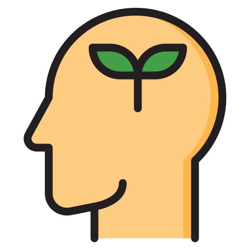

My name is Swam Htet Aung; I live by the quote: Helping other people also ends up being
beneficial for you at the end of the
day
,
which was said by Tanjiro Kamado from Demon Slayer.
I believe that we all are interconnected, and that one single action can trigger a huge impact. This perspective fuels my commitment to taking small, meaningful steps toward building a sustainable world.
I have a strong interest in science and mathematics. My curiosity drives me to continually learn and grow in these fields, which led me to enroll in DAAA course at Singapore Polytechnic. I believe that this course will provide me with the knowledge and skills crucial for solving the environmental challenges we face.
In my free time, I enjoy listening to music and dancing—though I must admit, I'm not particularly good at
either. My favourite song of all time is Enchanted
by Taylor Swift and My favourite album right
now is Hit Me Hard and Soft
by Billie Eilish.
My personality type is ENFJ, which means I am outgoing, empathetic, and driven by a desire to help others. These traits shape my approach to sustainability, as I strive to inspire and lead by example, fostering a community that values and works towards a greener future.
